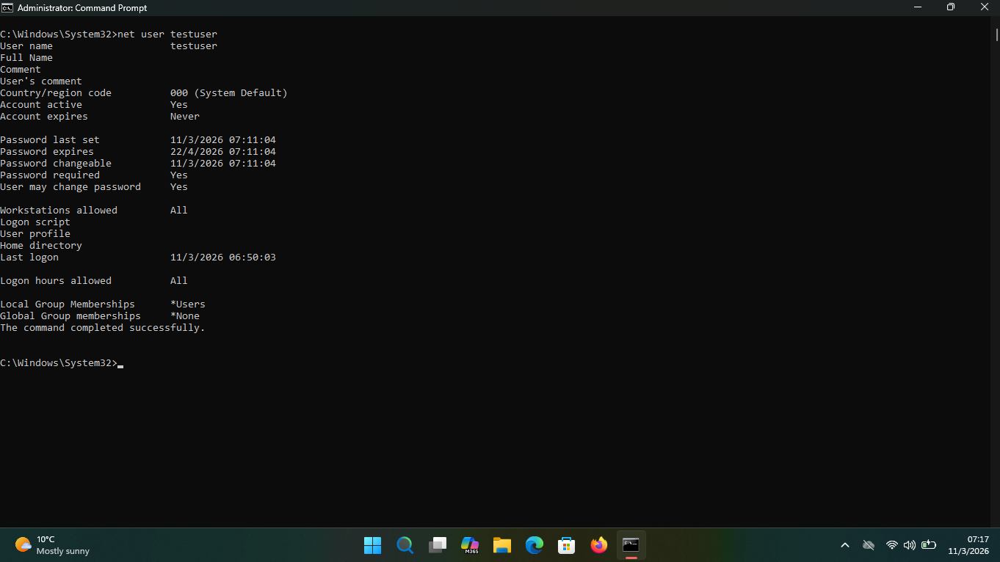

Target Roles
Primary (SOC): Junior SOC Analyst, Security Operations Intern.
Secondary: Entry-level IT Support roles that transition into SOC.
I'm a
Role Fit: Primary: Junior SOC Analyst. Secondary: IT Support-to-SOC pathway.
Trust Note: This portfolio never asks for passwords, card details, or software installs.
Current Focus: TS Academy Cybersecurity Scholarship Program (4–5 months) • Started January 31, 2026 • Expected completion: May–June 2026
Last Updated: Updating...
Primary (SOC): Junior SOC Analyst, Security Operations Intern.
Secondary: Entry-level IT Support roles that transition into SOC.
Johannesburg, South Africa (SAST, UTC+2)
Remote, Hybrid, or On-site
Available to start immediately
Open to Junior SOC Analyst, Security Operations internship, and entry-level cyber defense opportunities - Johannesburg, South Africa
Role Fit: Primary: Junior SOC Analyst. Secondary: IT Support-to-SOC pathway.
Python-based security toolkit with AES-256 file encryption/decryption, multi-algorithm hash calculation (MD5, SHA1, SHA256, SHA512), and password strength checks. Built as a practical learning and portfolio project.
Outcome: Combined AES-256 encryption and 4 hash algorithms into one practical toolkit for faster, repeatable security checks.
Hands-on Windows command-line project for Help Desk workflow practice: created a log folder, reset a local user password, controlled account status with /active:yes and /active:no, logged actions with date/time, and checked account details.
Outcome: Built a repeatable support process using net user, timestamped logging, and verification checks including whoami for clear accountability.

Interactive cybersecurity learning project demonstrating password security, attack-detection basics, and encryption concepts. Includes a brute-force simulation and a log-analysis module.
Outcome: Implemented brute-force simulation, log pattern detection, and encryption concepts in a single interactive tool to reinforce SOC-relevant fundamentals.
Interview fit: These labs directly map to common SOC interview questions on triage, email threat handling, and Windows security operations.
Got questions? Here are concise answers on role fit, skills, and interview readiness.
I am targeting Junior SOC Analyst and Security Operations internship roles first, while remaining open to entry-level IT Support roles that transition into SOC.
I use Python for security scripting and learning projects, focusing on cryptography, encryption, and automation. In my home lab, I work with Windows, Linux, virtualization, and security tools such as Nmap, Wireshark, Aircrack-ng, and Sysinternals as core parts of ongoing SOC and security engineering prep.
I usually respond within 24 hours and often sooner. I keep communication clear and consistent throughout application and interview processes.
Yes. My priority is gaining real-world experience in SOC and IT operations. I am open to internships and entry-level compensation for SOC, Security Operations, IT Support, and Help Desk roles, with pay aligned to role scope and location.
I am open to remote roles and on-site opportunities where practical. I am based in Johannesburg, South Africa, and available for remote shifts aligned with international teams.
I follow security basics in my lab and project work, such as careful access handling, safe file practices, and responsible data use. I am still building experience and continue learning practical security standards through TS Academy and hands-on practice.
I hold a BSc in Political Science (2014), a Google IT Support Professional Certificate (Coursera), and a Computer Literacy Certificate (Educourse). I started the TS Academy Cybersecurity Scholarship Program on January 31, 2026 and I am currently studying CompTIA A+/Security+ objectives.
I can work independently and collaboratively. Most of my teamwork experience comes from learning communities and project collaboration, and I am ready to grow that in professional SOC teams and IT Support/Help Desk environments.
I have built portfolio projects focused on cybersecurity tooling, Python security scripting, and incident response workflows. I maintain a personal home lab with Windows/Linux systems, virtual machines, and security platforms to practice SOC fundamentals, threat detection, and engineering principles.
Please reach out through the contact form, email, or LinkedIn. I respond to recruiter messages within 24 hours and can share interview availability in SAST.
Still have questions?
Contact Me DirectlyCurrent Goal: Seeking Junior SOC Analyst or Security Operations internship opportunities; open to entry-level IT Support roles that transition into SOC.
Availability SLA: I respond to recruiter messages within 24 hours.
Time Zone & Interview Window: SAST (UTC+2), weekdays 09:00-18:00, with recruiter responses within 24 hours.
Recruiter CTA: Send role description, team size, and shift model for a fast-fit response.
Open to Junior SOC Analyst, Security Operations internship, and IT Support-to-SOC pathway opportunities.
I usually reply within 24 hours. For best results, include role title, location, and start timeline.